Yannik Brändle - SoSe26
TH Bingen
Donnerstag 13.11.2025 I 15:00 Uhr
Technische Hochschule Bingen, Raum 5-205
Mitmachen via slido.com mit #2152374
Oder via Link: https://app.sli.do/event/jsTRvdn7ggvL14xFxuhNpb
commit gespeichert
merged) werden
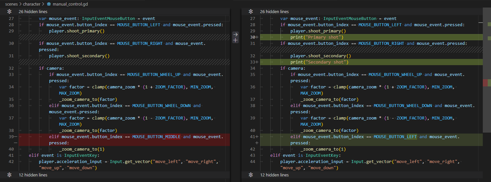
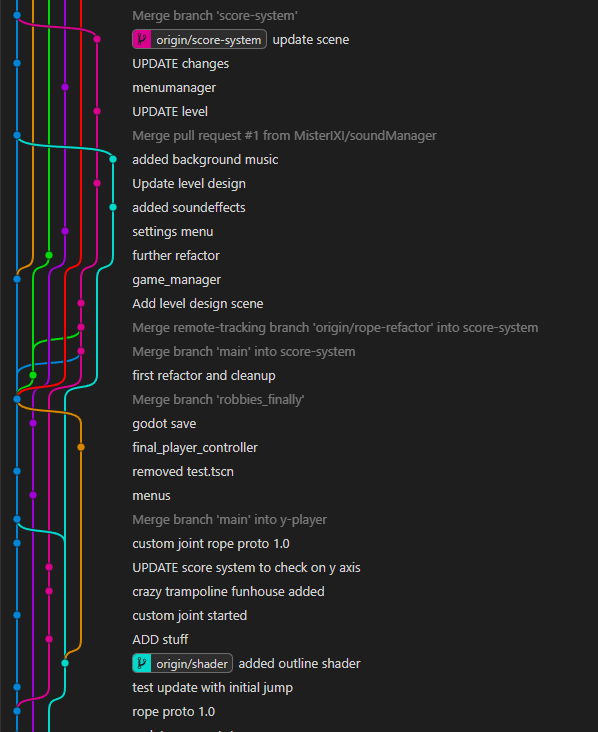
Backlog, In Progress,
(Review) Done
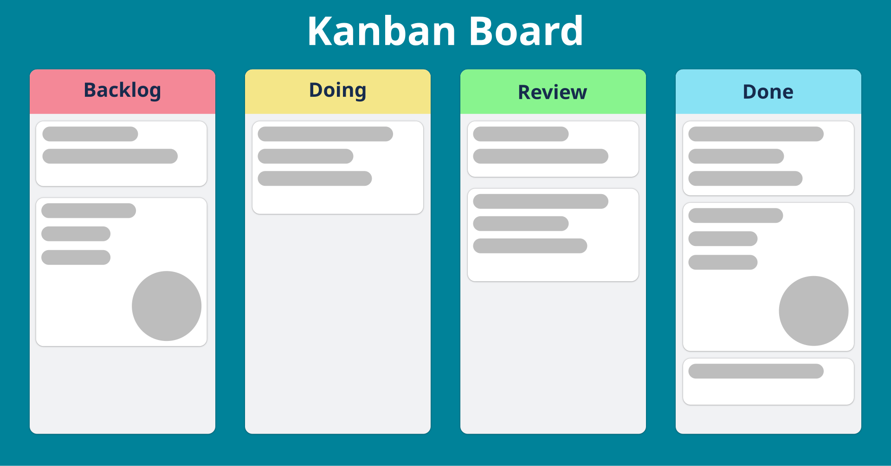
Source: Wikipedia Kanban → https://en.wikipedia.org/wiki/Kanban_board#/media/File:Abstract_Kanban_Board.svg
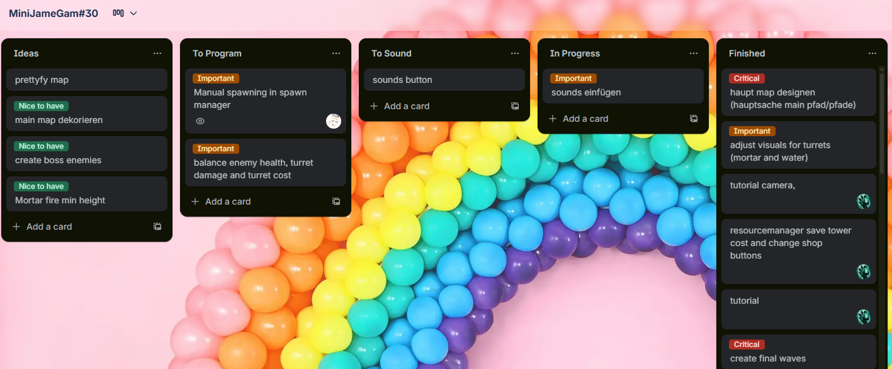
Hilft auch wenn es nicht perfekt befolgt wird!
.tscn steht für "TextScene"
Funktion Dijkstra(Graph, Startknoten):
initialisiere(Graph,Startknoten,abstand[],vorgänger[],Q)
// Der eigentliche Algorithmus
solange Q nicht leer:
u := Knoten in Q mit kleinstem Wert in abstand[]
// für u ist der kürzeste Weg nun bestimmt
entferne u aus Q
für jeden Nachbarn v von u:
// falls noch nicht berechnet
falls v in Q:
// prüfe Abstand vom Startknoten zu v
distanz_update(u,v,abstand[],vorgänger[])
return vorgänger[]
Quelle: Wikipedia https://de.wikipedia.org/wiki/Dijkstra-Algorithmus
|
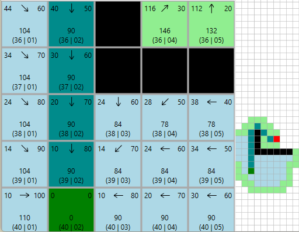 |
|
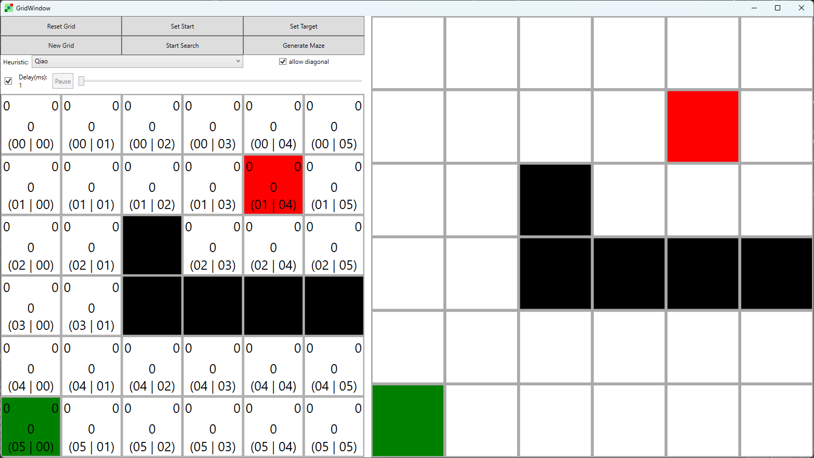
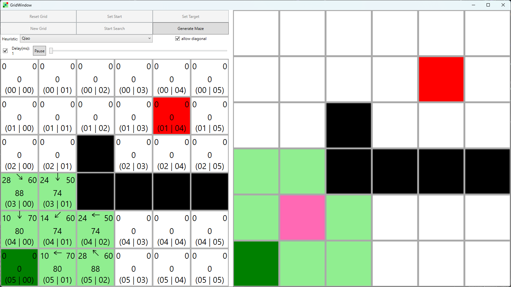
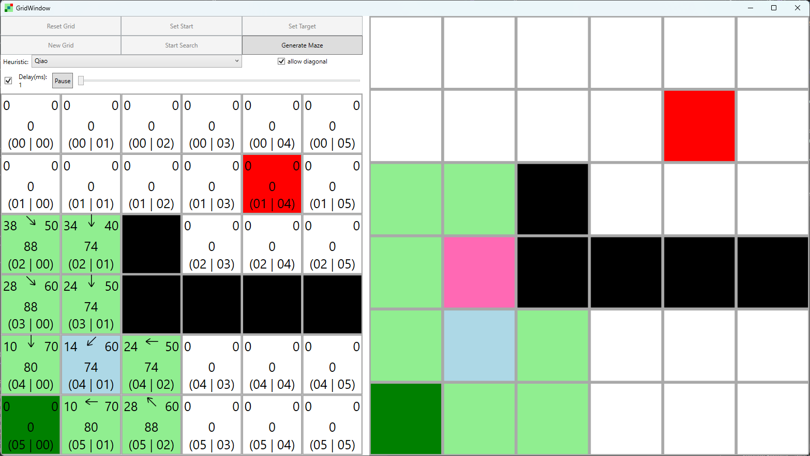
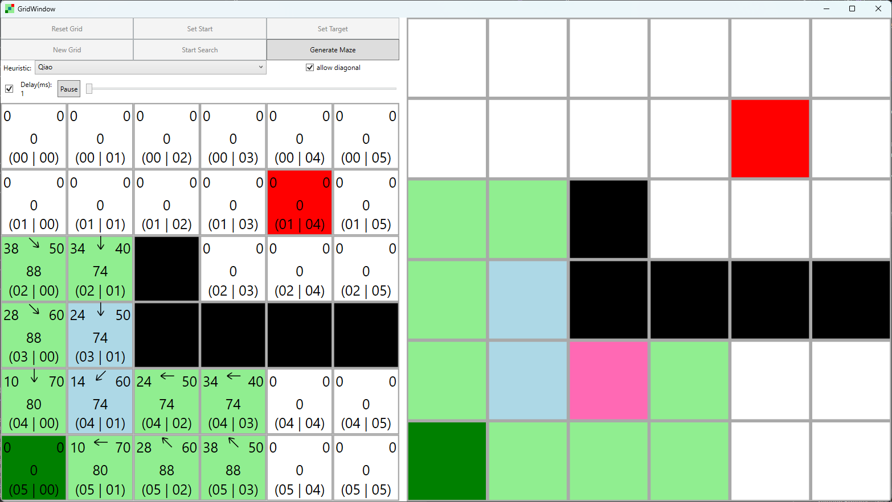
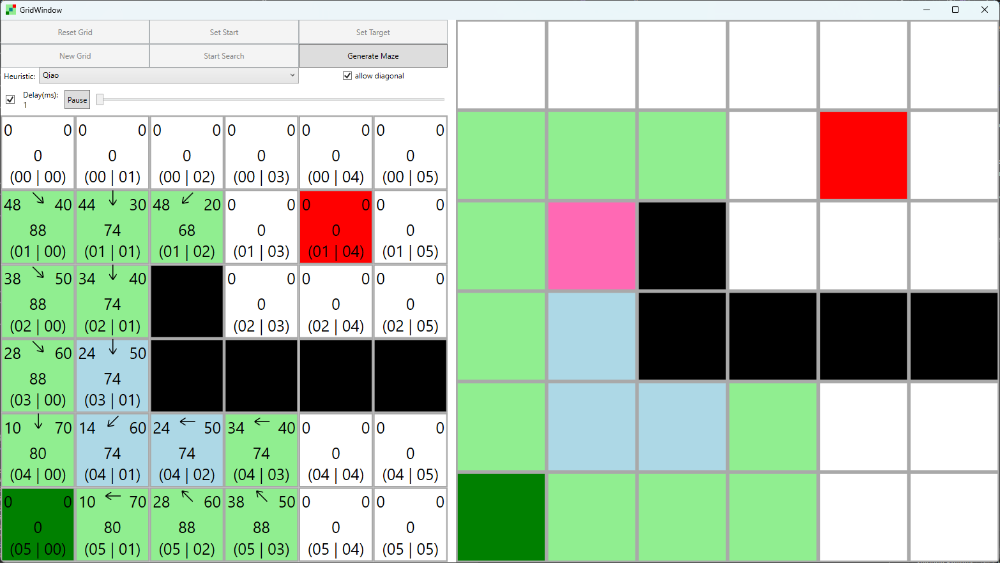
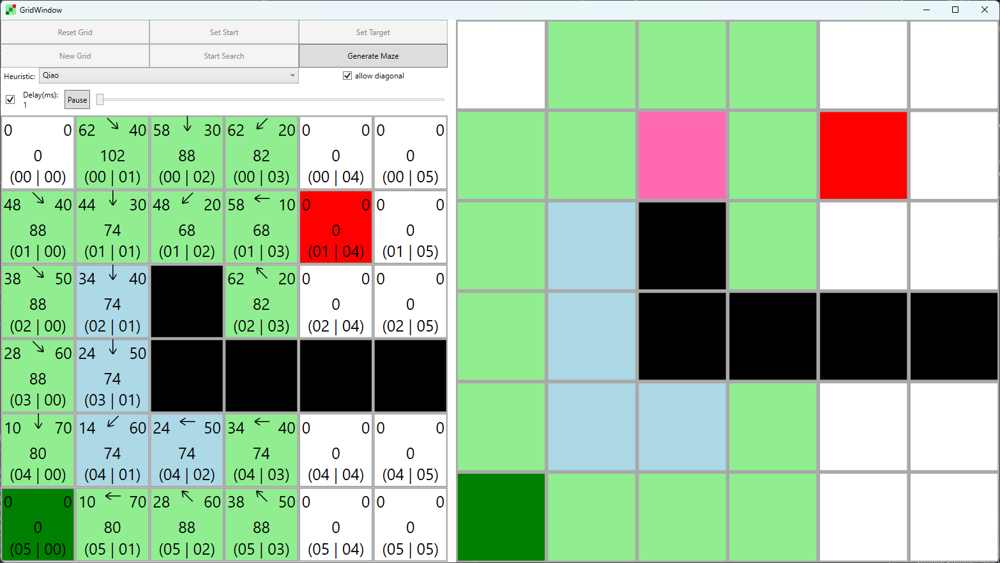
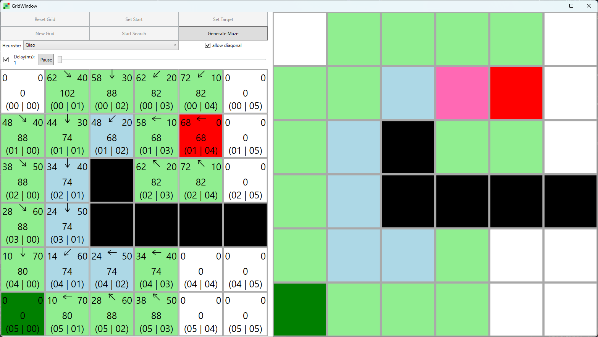
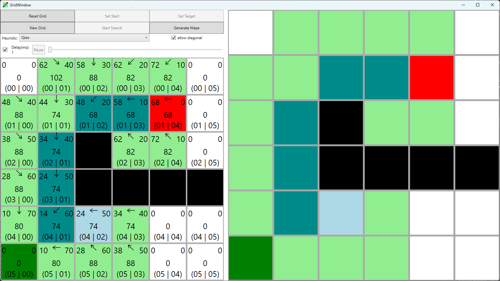
😱
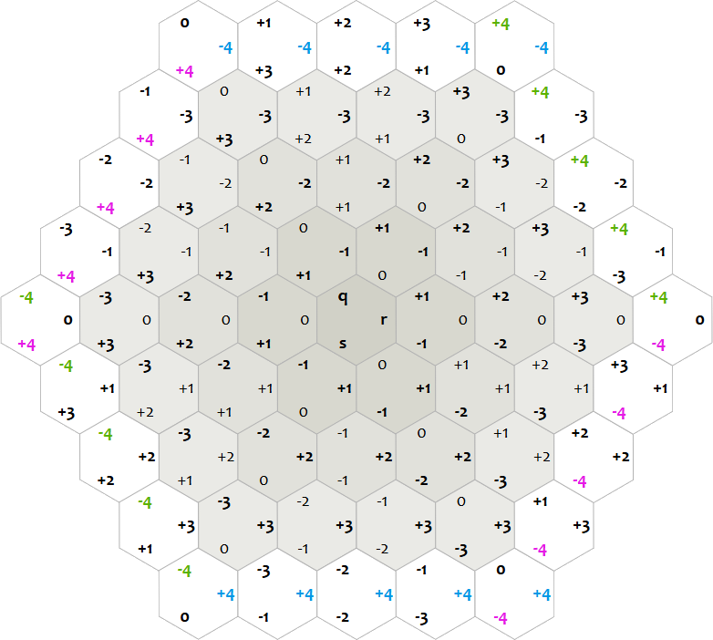
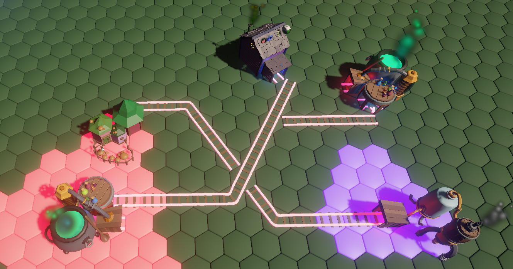
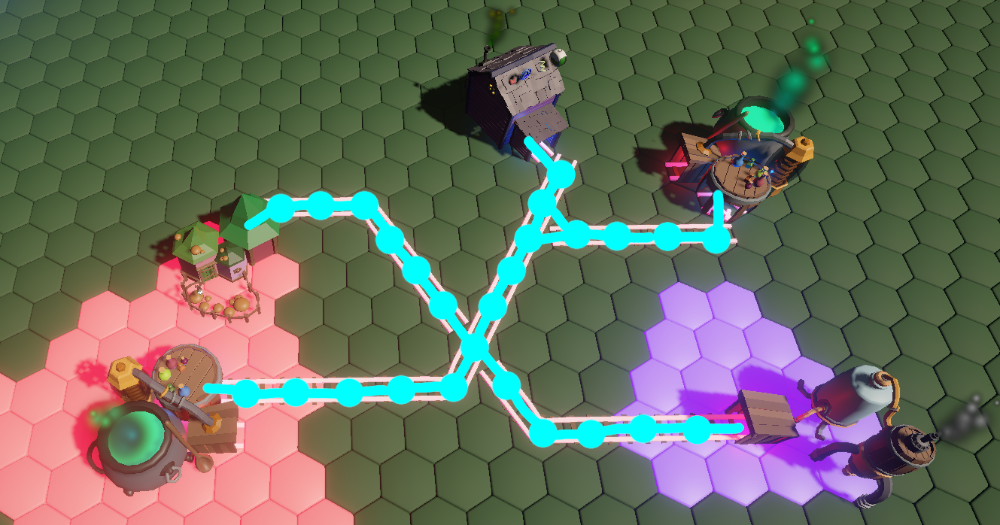
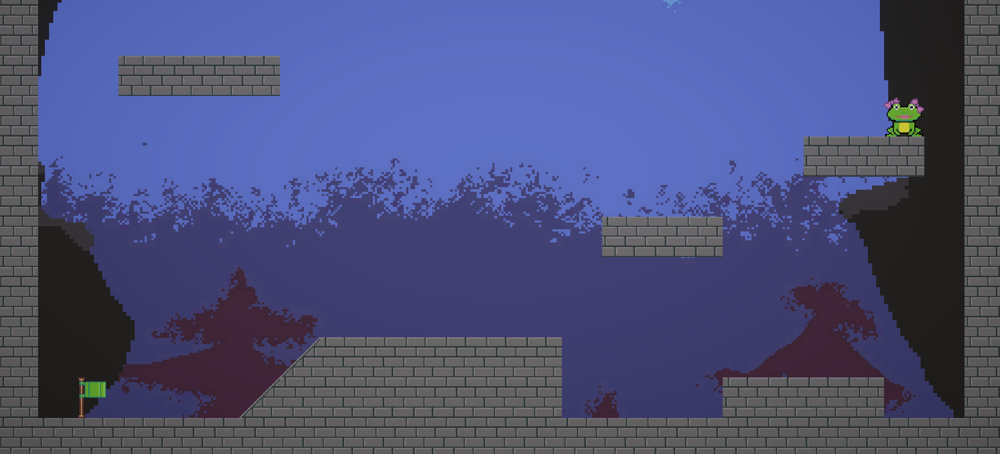
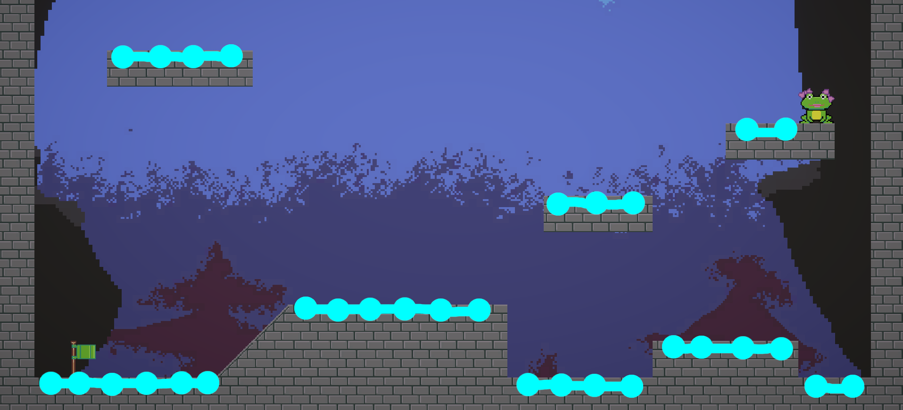
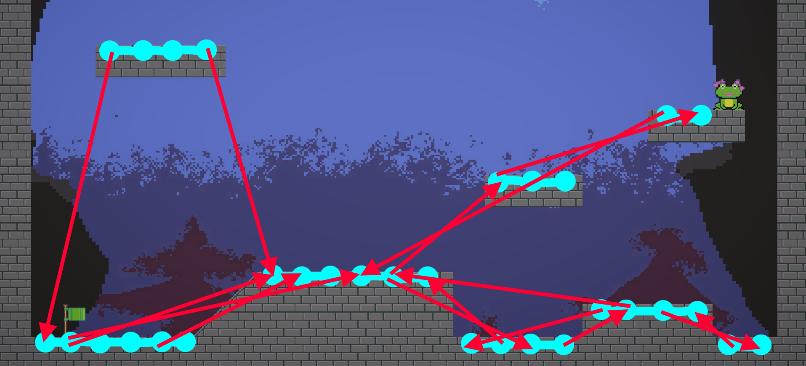
NavigationAgent2D{kind=link}